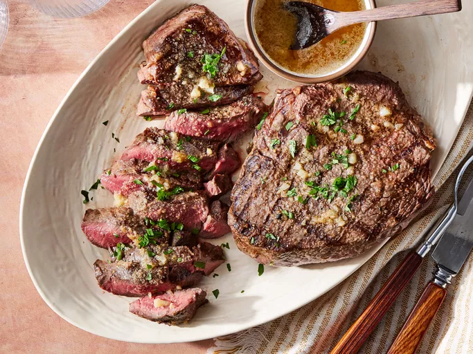

Home
Garlic Butter Steak Recipe

Garlic Butter Steak
A perfectly cooked steak with a rich garlic butter sauce is a
timeless dish that highlights the natural flavors of high-quality beef.
The key to a great steak is selecting a well-marbled cut like ribeye,
filet mignon, or New York strip and cooking it over high heat to create a
beautiful crust. The steak is seared in a hot pan with butter, garlic, and
fresh herbs, infusing it with a deep, savory flavor.
Ingredients
- 2 ribeye or New York strip steaks (about 1 inch thick)
- 2 tablespoons olive oil
- 4 tablespoons unsalted butter
- 3 cloves garlic, minced
- 1 teaspoon salt
- 1 teaspoon black pepper
Steps
-
Remove the steaks from the refrigerator and let them sit at room
temperature for 30 minutes to an hour. This will help them cook more
evenly.
-
Season the steaks generously with salt and pepper on both sides. Heat a
large skillet over high heat and add the olive oil. Once the skillet is
hot, add the steaks and sear for 3-4 minutes on each side for
medium-rare doneness. Adjust the cooking time based on your desired
level of doneness.
-
Reduce the heat to medium-low and add the butter, garlic, and fresh
herbs to the skillet. Cook for an additional 2-3 minutes, basting the
steaks with the garlic butter sauce. Remove the steaks from the skillet
and let them rest for 5-10 minutes before slicing and serving.
-
Serve the garlic butter steaks with your favorite sides, such as roasted
vegetables, mashed potatoes, or a fresh green salad.
-
Enjoy your delicious homemade garlic butter steaks with a glass of red
wine or your favorite beverage. Bon appétit!